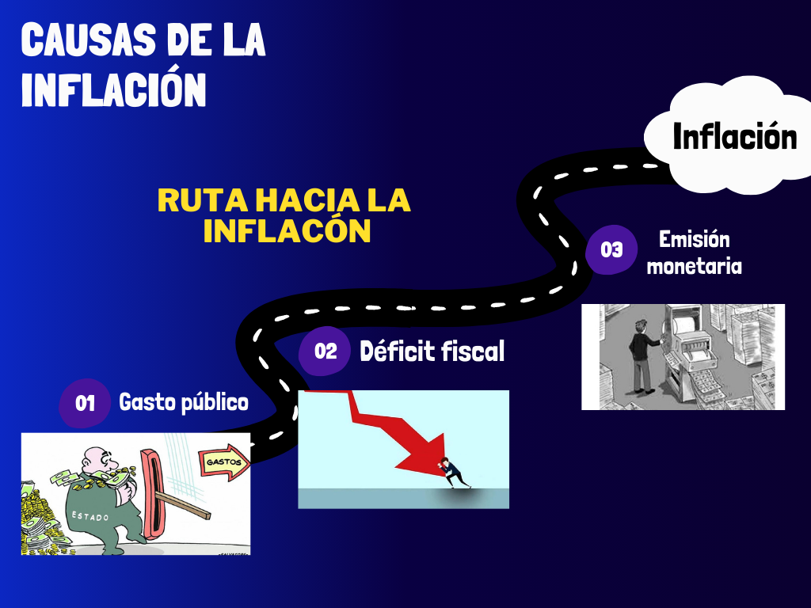

Causas de la inflación
Emisión Monetaria
La emisión monetaria se define como la creación de todo el dinero en efectivo que circula en la economía. El Banco central de cada país es la única institución financiara autorizada a emitir billetes y monedas. Las consecuencias de estas son que, si se hace sin respaldo (es decir, sin reservas en el banco central o sin mayor demanda), el valor del dinero caerá. Por lo que se generaría inflación.
Déficit fiscal
El déficit fiscal se da cuando los gastos del país son mayores a los ingresos. El déficit por sí solo no genera inflación, sin embargo, una de las formas para “solucionarlo” es la emisión monetaria sin respaldo la cual si genera inflación. En Argentina pasa exactamente esto, se emite sin respaldo porque el gasto es superior a los ingresos del país.
Gasto Público
El gasto público son los gastos realizados por el sector público en un periodo determinado, sea en la adquisición de bienes y servicios como así también en la prestación de subsidios y transferencias. Un gasto público excesivo (cuando se gasta más de lo que se ingresa) conduce a un déficit fiscal, que como vimos, en este país se solventa con la emisión monetaria sin respaldo.